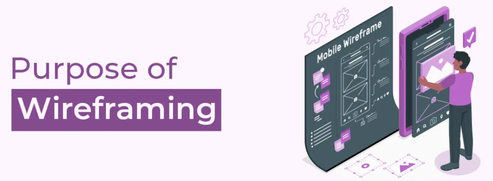
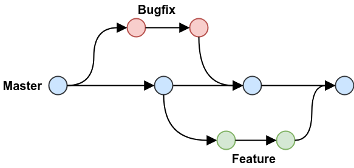

Development Concepts
A quick overview of common terms in software and web development.
What is a wireframe?

A wireframe is a visual layout of a webpage or app. It outlines the structure and placement of elements, helping plan user interfaces and navigation before design and development begin. Wireframes are typically created in the early stages of a project to communicate ideas and requirements between designers, developers, and stakeholders. They focus on functionality and user experience rather than colors or graphics, making it easier to identify potential issues and make changes before investing time in detailed design. By providing a clear blueprint, wireframes help ensure that everyone involved shares the same vision for the final product.
Read more about the wireframe
What is the purpose of a README file?

A README file serves as the introductory documentation for a project. It provides an overview, setup instructions, and usage details, helping others understand how to work with the project. A well-written README typically includes information about the project's purpose, features, and requirements. It may also contain guidelines for contributing, troubleshooting tips, and links to additional resources or documentation. By offering clear instructions and context, a README makes it easier for new users and collaborators to get started and contribute effectively.
Read more about the README file
What is a branch in Git?

A branch in Git is a separate version of a project where you can work independently on features or fixes. It allows for collaboration and safe development before merging changes into the main codebase. Branches are commonly used to experiment with new ideas, develop features, or fix bugs without affecting the main project. Once the work on a branch is complete and tested, it can be merged back into the main branch, ensuring the stability of the codebase. This workflow helps teams organize their work, avoid conflicts, and maintain a clear history of changes.
Read more about branches in Git